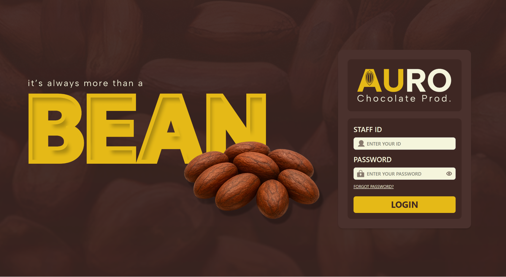
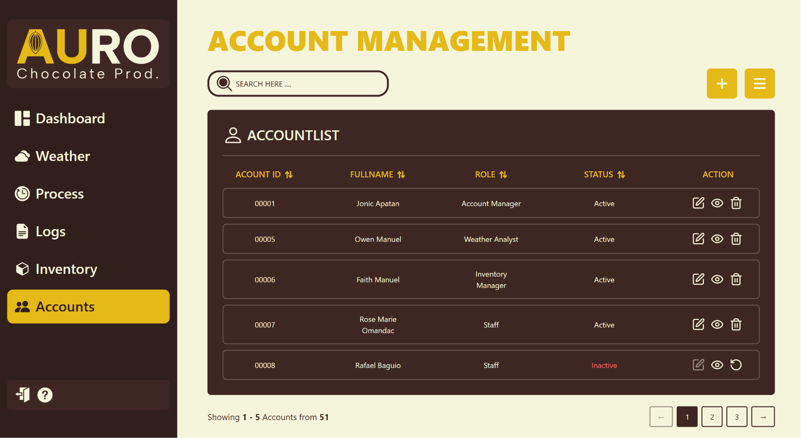
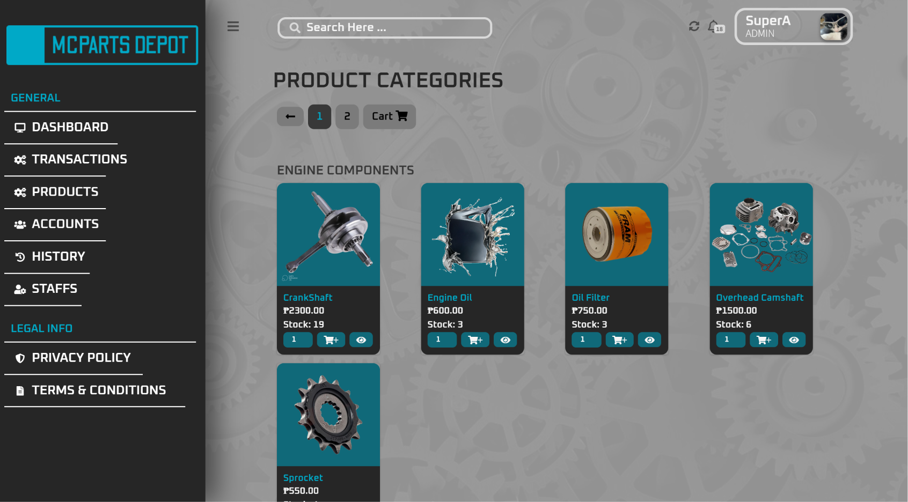
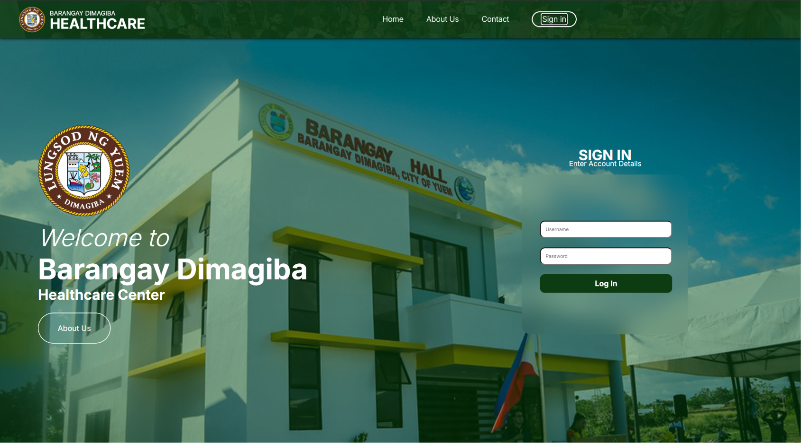
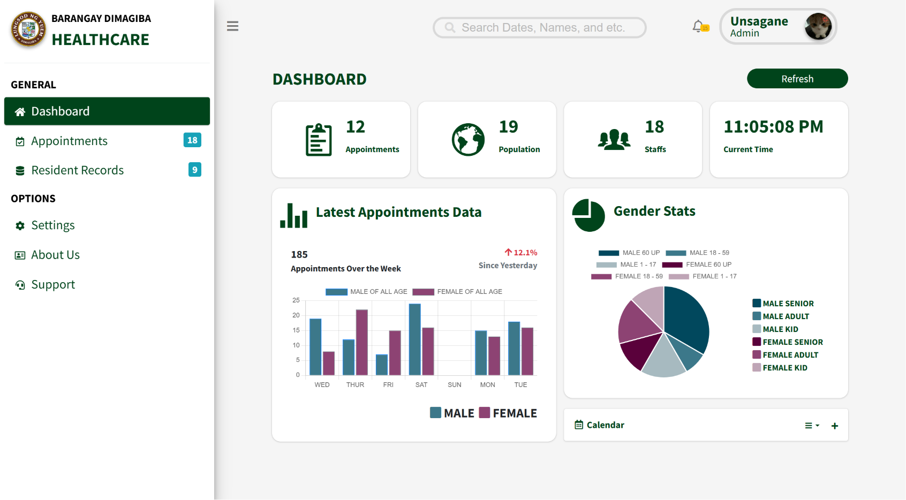
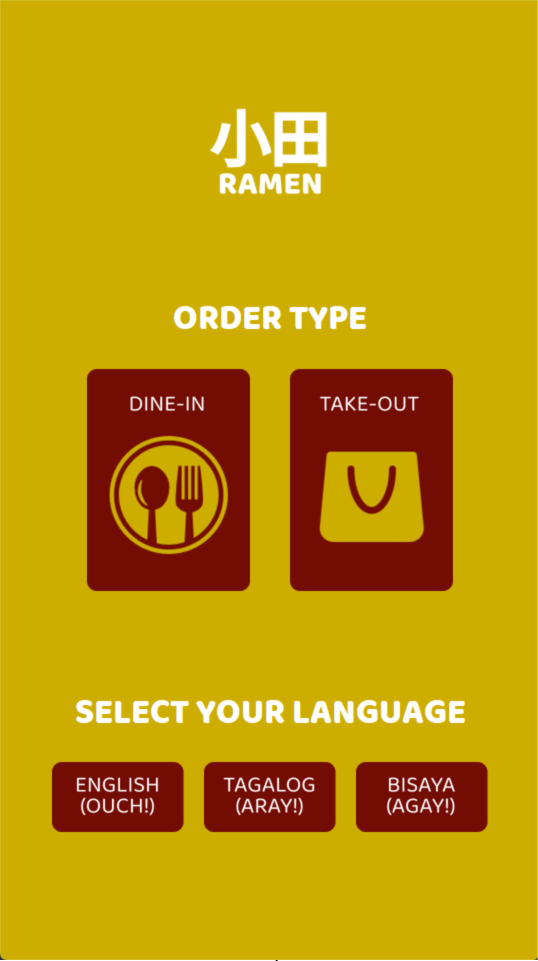
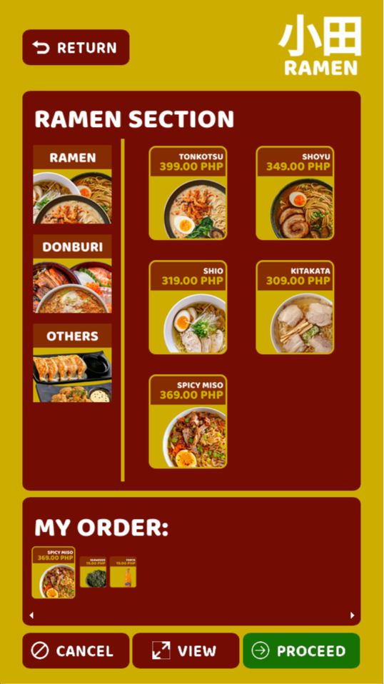
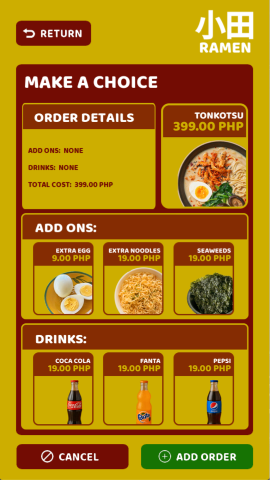
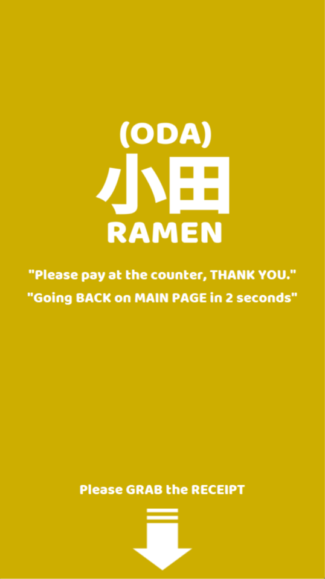

<div id="projects-overlay" class="projects-overlay">
    <div class="projects-content">
        <h2 class="projects-header">PROJECTS</h2>
        <div class="projects-grid">
        <a class="project-card" href="https://github.com/Jiwonieee19/CPMS" target="_blank" rel="noopener noreferrer">
            <h3>Cacao Processing Management (2026)</h3>
            <p>Web application for managing AURO's cacao processing workflows, inventory, weather updates, and production records.</p>
            <div class="project-tags">
                <span style="background-color: yellow; color: black;">JavaScript</span>
                <span style="background-color: #8892BE; color: black;">PHP</span>
                <span>React</span>
                <span>Laravel</span>
            </div>
            <div class="project-images">
                
                
            </div>
        </a>
        <a class="project-card" href="https://github.com/Jiwonieee19/McPartsDEPOT" target="_blank" rel="noopener noreferrer">
            <h3>McParts Depot (2025)</h3>
            <p>Web-based motorcycle parts sales and inventory system for McParts Shop to help manage products, sales, customers, and stock.</p>
            <div class="project-tags">
                <span style="background-color: #FF5733; color: white;">HTML</span>
                <span style="background-color: #490595; color: white;">CSS</span>
                <span style="background-color: #8892BE; color: black;">PHP</span>
                <span style="background-color: yellow; color: black;">JavaScript</span>
                <span>Bootstrap</span>
            </div>
            <div class="project-images">
                
                
            </div>
        </a>
        <a class="project-card" href="https://github.com/mac1116/Brgy_HealthCare" target="_blank" rel="noopener noreferrer">
            <h3>Brgy HealthCare (2025)</h3>
            <p>WebDev project for barangay health centers to digitize patient records, streamline healthcare services, and improve record management.</p>
            <div class="project-tags">
                <span style="background-color: #FF5733; color: white;">HTML</span>
                <span style="background-color: #490595; color: white;">CSS</span>
                <span style="background-color: #8892BE; color: black;">PHP</span>
                <span style="background-color: yellow; color: black;">JavaScript</span>
            </div>
            <div class="project-images">
                
                
            </div>
        </a>
        <a class="project-card" href="https://github.com/Jiwonieee19/PROGLANG_FinalProject" target="_blank" rel="noopener noreferrer">
            <h3>ODA Ramen (2025)</h3>
            <p>Point-of-Sale (POS) system developed for ODA Ramen to simplify order management, billing, and daily restaurant operations.</p>
            <div class="project-tags">
                <span style="background-color: #306998; color: white;">Python</span>
                <span>Tkinter</span>
            </div>
            <div class="project-images-2">
                
                
                
                
                
            </div>
        </a>
        <p class="repo-link">click the project to view the repository</p>
    </div>
</div>
</div>